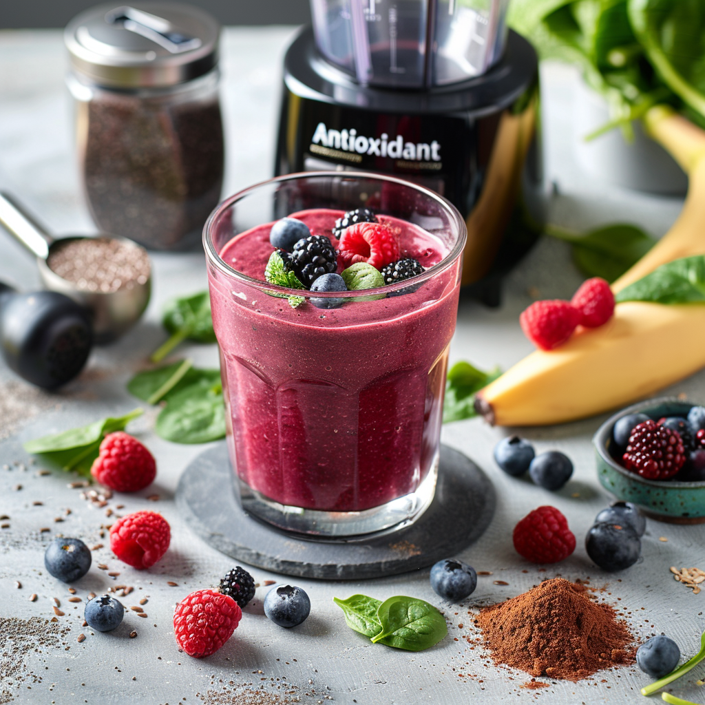

Smoothie Energético de Bayas
Ingredientes
- 1 taza de fresas
- 1/2 taza de blueberries
- 1 banana madura
- 1 taza de leche de almendra
- 1 cucharada de miel
Preparación
Mezcla todo en una licuadora hasta que quede cremoso.
⬅ VolverMezcla todo en una licuadora hasta que quede cremoso.
⬅ Volver